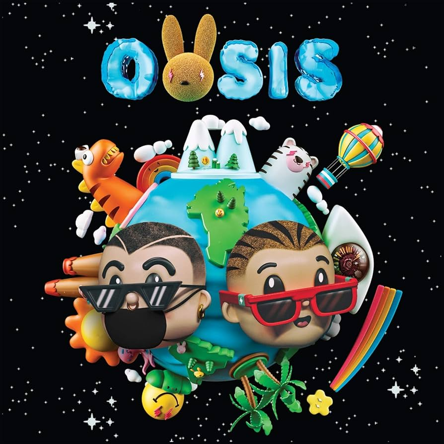
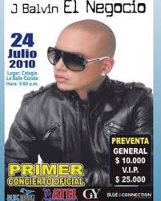
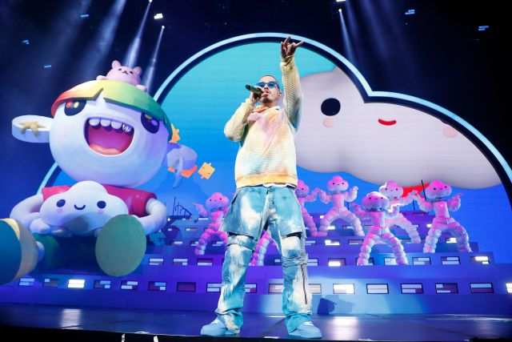
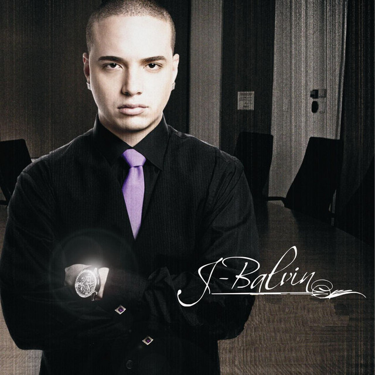
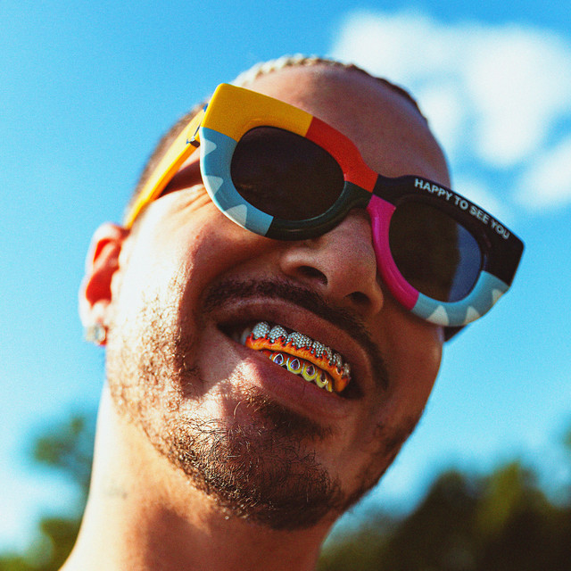

J Balvin
Año de inicio/finalización:
Comenzaría a darse a conocer como solista en 2007 con la canción «Éxtasis», la cual contó con una remix con Jowell.
Canción Más Popular:
El 1 de junio de 2017, lanzó su otro sencillo «Bonita» junto a Jowell & Randy. El 29 de junio de 2017, lanzó su sencillo «Mi gente» junto a Willy William.
10 canciones más escuchadas:
Álbum más escuchado/Vendido:
En febrero de 2019, J Balvin lanzó "OASIS", su primer álbum colaborativo junto con Bad Bunny. Este álbum fue muy aclamado por la crítica y se convirtió en uno de los más populares en la música urbana latina.
Primer Concierto:
En 2020, J Balvin hizo parte del show de medio tiempo del Super Bowl LIV junto con Jennifer López, Shakira y Bad Bunny, marcando un hito importante en su carrera y siendo uno de los eventos más vistos en la historia de la televisión.
Último concierto:
Su último concierto conocido fue el 10 de mayo en Copenhague, donde J Balvin continuó deleitando a sus fans con su energía y sus éxitos más recientes.
Primera Canción:
J Balvin comenzó su carrera haciendo y promocionando su música de manera independiente. En 2009, fue firmado por EMI Colombia y lanzó su sencillo "Ella me cautivó", que marcó el inicio de su ascenso en la industria musical.
Última canción:
"Triple S" fue su última canción lanzada junto a De La Ghetto, Jowell & Randy, mostrando su versatilidad y su capacidad para colaborar con otros artistas destacados del género urbano.
Primer álbum:
"Real" es el primer álbum de estudio de J Balvin, que incluye colaboraciones con Jowell, Final & Shako, Jutha, Sara Tunes, Andy Aguilera, Karma, El Tigre, Under Pressure, Bufalo y K-Litos. Este álbum estableció las bases de su sonido y estilo distintivo.

Último álbum:
"José" es el quinto álbum de estudio solista de J Balvin, lanzado el 10 de septiembre de 2021 a través de Universal Latin. Este álbum mostró su evolución como artista y su capacidad para innovar en el género urbano.
Biografía:
José Álvaro Osorio Balvín, más conocido como J Balvin, es un cantante y productor colombiano reconocido internacionalmente. Ha vendido más de treinta y cinco millones de álbumes y sencillos a nivel mundial, posicionándose como uno de los artistas latinos más exitosos. Su música ha alcanzado el número uno en múltiples listas musicales, incluyendo Billboard, tanto en el mercado hispano como en el angloparlante.